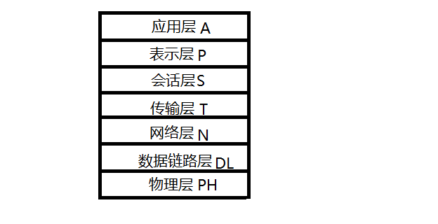
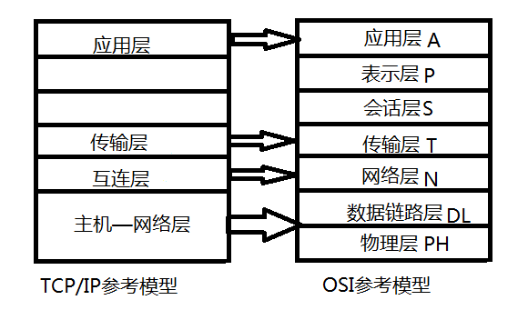

OSI/RM 开放系统互连参考模型
TCP/IP 参考模型
OSI/RM 与TCP/IP参考模型的比较
OSI/RM 简介
开放式系统互连基本参考模型是由国际标准化组织（ISO）指定的。OSI包括了体系结构，服务定义和协议规范三级抽象。注意OSI参考模型并非具体实现的描述，它只是一个为制定标准而提供的概念性框架。在OSI中，只有各种协议是可以实现的，网络中的设备只有与OSI的有关协议相一致时才能互连。
OSI/RM 结构
OSI参考模型将网络划分为七层，如图

（1）物理层的主要功能和提供的服务如下：
（2） 首先数据链路层的功能在于管理第一层的比特资料，并且将正确的资料传送到没有传输错误的路线中。建立还有辨认资料开始以及结束的位置同时予以标记。另外，就是处理由资料受损、遗失甚至重复传输错误的问题，使后续的层级不会受到影响，所以它执行资料的侦错、重传或修正，还有决定设备何时进行传输。 设备有：Bridge桥接器switch交换器
（3） 网络层为资料传送的目的地寻址，再选择出传送资料的最佳路线。
（4） 传输层用于控制资料流量，并且进行侦错及错误处理，以确保通信顺利。而传送端的传输层会为分组加上序号，方便接收端把分组重组为有用的资料或档案。
（5） 会话层用于为通信双方制定通信方式，并建立、注销会话（双方通信）。
（6） 表示层能为不同的用户端提供数据和信息的语法转换内码，使系统能解读成正确的数据。同时，也能提供压缩解压、加密解密。
（7） 应用层能与应用程序界面沟通，以达至展示给用户的目的。 在此常见的协定有: HTTP，HTTPS，FTP，TELNET，SSH，SMTP，POP3等。
通信服务类型
通信服务可以分为两大类：面向连接服务（Connection-orientedServices）和无连接服务（Connectionless Services）
第一种服务和电话系统的工作模式相类似。特点：数据传输过程前必须经过建立连接，维护连接和释放连接的三个过程；在数据传输过程中，各分组不需要携带目的节点的地址。面向连接服务的传输连接类似于一个通信管道，发送者在一端放入数据，接受者从另一端取出数据。面向连接数据传输的收发数据顺序不变。
第二种服务与邮政系统的信件投递过程相类似。特点：每个分组都要携带完整的目的节点的地址，各分组在通信子网中是独立传送的。先发送的不一定先到达，因此接收时数据分组可能出现乱序，重复与丢失的现象。
确认和重传机制
确认：数据分组接收节点在收到每个分组后，要求向发送节点会送正确接收分组的确认信息
重传机制：当发送失败时，重新发送
缺点：1，会话层与表示层基本上是空的
2，数据链路层与网络层的内容过多，过于复杂
3，OSI模型和服务，协议都很复杂
4，在功能上，有些功能重复出现，降低效率
TCP/IP 参考模型
TCP/IP 简介
传输控制协议/互连网协议TCP/IP（Transmission Control Protocol/Internet Protocol），一般来说TCP提供传输层服务，而IP提供网络层服务。特点：
（1） 开放的协议标准，可以免费使用，并且独立于特定的计算机硬件与操作系统
（2） 独立于特定的网络硬件，可以运行在局域网，广域网，更适用于互联网中
（3） 统一的网络地址分配方案，使得整个TCP/IP设备在网中都具有唯一的地址
（4） 标准化的高层协议，可以提供多种可靠的用户服务
TCP/IP体系结构
TCP/IP参考模型可以分为四个层次：应用层，传输层，互联层，主机—网络层。如图：

（1） 主机网络层是TCP/IP实现的基础，它包括TCP/IP赖以存在的各种通信网与TCP/IP之间的接口和物理网络协议
（2） 互连层中，它的功能主要由IP来提供，除了提供端到端的分组分发功能外，另外一个功能是在相互独立的局域网上建立互连网络，即互连网
（3） 传输层中，负责应用进程之间的端—端通信，它与OSI参考模型的传输层功能是相似的
（4） 应用层中，提供了一些SMTP， DNS， FTP 等协议
缺点：
1， 没有清楚的区分哪些是规范，哪些是实现
2， 最底层没有特别区分接口和层
OSI/RM 与TCP/IP参考模型的比较
相同：两者都以协议栈的概念为基础，并且协议栈中的协议彼此相互独立。都采用了层次结构的概念且各层的功能也大体相同
不同：对于无连接的和面向连接的通信范围有所不同
OSI模型的网络层同时支持无连接和面向连接的通信，但是传输层只支持面向连接的通信
TCP/IP模型的网络层只有一种模式即无连接通信，但是在传输层上同时支持两种模式。